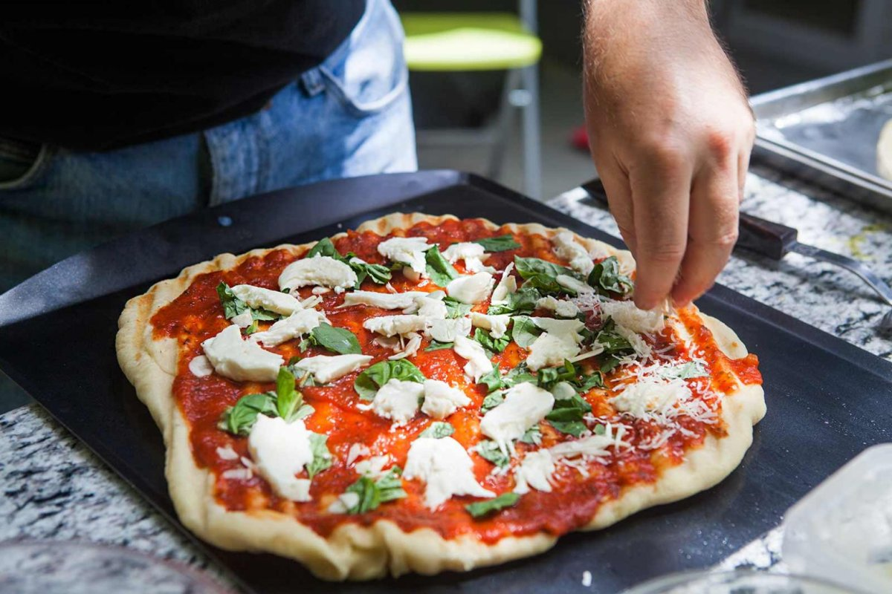

Пицца
 4.5
4.5
От 25 рублей

Ингредиенты
Мука
Вода
Сахар
Масло
Лимонная кислота
Томатный соус
Ветчина
Шампиньон
Чеддер
Болгарский перец
Помидор
Вода
Сахар
Масло
Лимонная кислота
Томатный соус
Ветчина
Шампиньон
Чеддер
Болгарский перец
Помидор
2 стакана
0.5 стакана
1 ч.л.
200 г.
0.5 ч.л.
0.5 стакана
200 г.
4 шт.
5 ст.л.
0.5 шт.
1 шт.
0.5 стакана
1 ч.л.
200 г.
0.5 ч.л.
0.5 стакана
200 г.
4 шт.
5 ст.л.
0.5 шт.
1 шт.

Способ приготовления
Нарежьте масло на мелкие кусочки и смешайте с мукой. Добавьте все остальные ингредиенты и замесите тесто. Раскатайте его, постоянно складывая. Поместите получившуюся массу в холодильник на 1–2 часа. После этого тесто можно раскатывать и готовить.
Разогрейте духовку до 230 градусов
Поместите туда камень для выпекания или решетку
Раскатайте тесто
Тщательно смажьте основу томатным соусом
Нарежьте все ингредиенты для начинки слайсами
Равномерно распределите продукты
Пиццу нужно поставить в духовку
Выпекайте пиццу 15-20 минут в духовке
Достаньте блюдо, посыпьте сыром и выпекайте до тех пор, пока он не расплавится
После того как достанете блюдо из духовки, дайте ему отдохнуть около 5–10 минут.